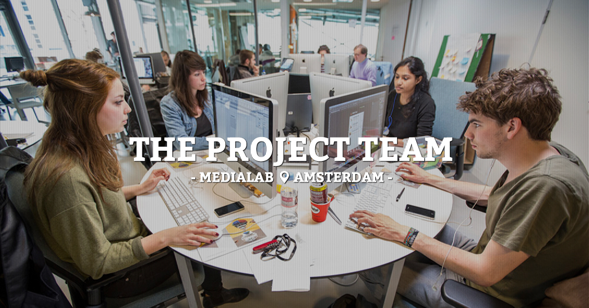

The brains behind the work


Linda
A Communication and Multimedia Student whose specialty is the interaction between user and product. She had the roles of conceptualist, media designer and MarCom specialist on the STIHO project.
Sabrina
A Media and Culture student at the University of Amsterdam. She loves to ride her bike, be efficient, learn, make things, drink coffee… She was producer, media researcher and information designer on the STIHO project.
Aishwarya
She is an electrical engineer from India. She joined the MediaLAB to learn more about tools and concepts used in multimedia and creative technologies. She was media designer and conceptualist on the STIHO project.
Jelmar
A Communication & Multimedia Design student with a passion for interaction-, co- and social design. He is media designer and editor/blogger on the STIHO project.